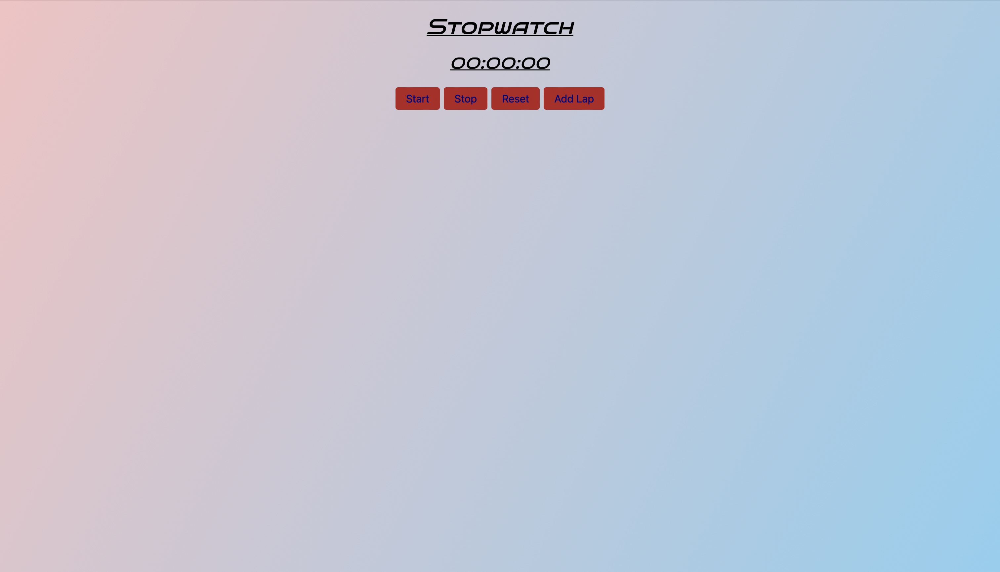

Welcome to the score counter which is a python program created by me which asks the user to input a single-digit number (positive or negative) and when a score adds up to a unknown number, the loop should stop and give a secret message, if the score drops below zero it won't be good. Click the image below to view:
Welcome to Sanji's guessing game, Sanji wants you to guess his favorite fruits
apples users must input a guess for the fruits.
If the guess matches one of the words in Sanji's fruit list, a message will appear on the screen. If the user does not get the answer in four tries, the console may print out a diffrent message. Click the image below to view:
Welcome to the Tip calculator which is a calculator that askes for input for a total price and tip percentage, the program will print the results of the Tips after they have been calculated by this calculator. Click the image below to view:
Welcome to my action movie website a place where you can view some of the past, present and future greatest action movies to be released
Welcome to my NFT SWISH website a place where you can learn about the 2022-2023 Starters for the New York Knicks and learn about NFTs.
Welcome to my Stopwatch website a place where you can use a stopwatch with a unique color scheme
